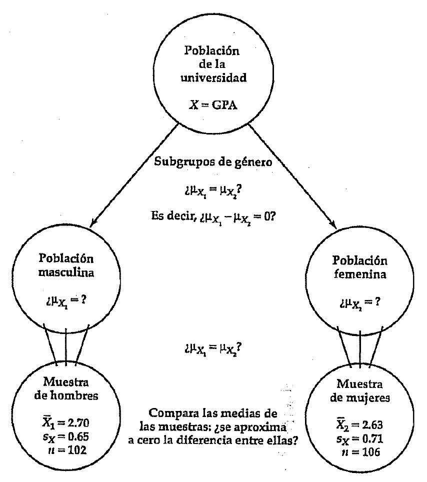
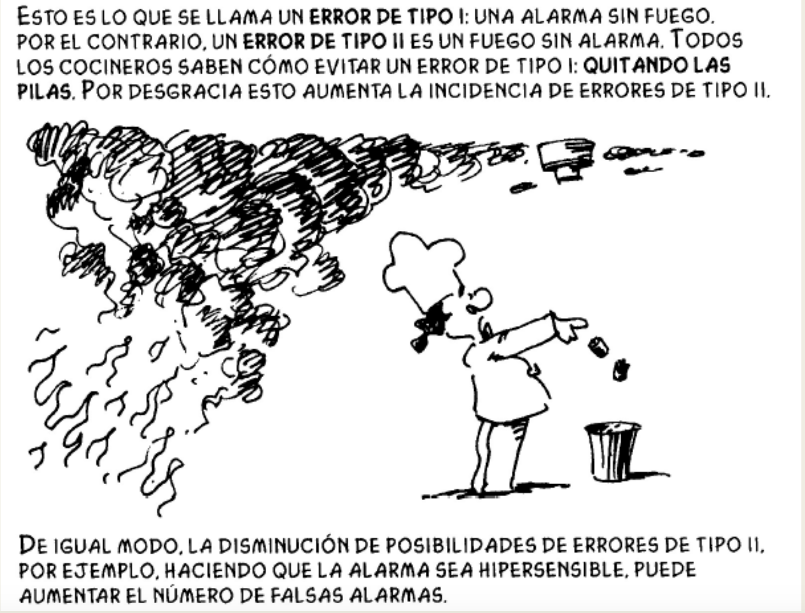

Clase 5
Arturo Maldonado
20/09/2022
Introducción
La comparación de los intervalos de confianza de 2 grupos es un método “informal” para saber si las diferencias en las medias o las proporciones entre dos grupos se pueden extrapolar a la población. La idea era calcular los intervalos de confianza para cada grupo y ver si los intervalos se interceptan o no. La regla era que si los intervalos de ambos grupos no se interceptaban, podíamos extrapolar que la diferencia muestral existe en la población al 95% de confianza. Si los intervalos no se traslapan, entonces no podemos afirmar que las diferencias sean significativas. En esta sección se verá cómo pasar de la evaluación “informal” a la “formal” mediante la introducción a la prueba t de diferencia de medias.
Prueba t de diferencia de medias
Esta prueba compara la media de una variable de numérica para dos grupos o categorías de una variable nominal u ordinal. Los grupos que forman la variable nominal/ordinal tienen que ser independientes. Es decir, cada observación debe pertenecer a un grupo o al otro, pero no a ambos.
Por ejemplo, si se quisiera evaluar si existen diferencias en el rendimiento académico entre alumnos hombres y mujeres en la PUCP, teóricamente, se habría registrado el CRAEST de todos los alumnos de la universidad (Variable X) y por lo tanto se podría tener los parámetros del CRAEST para los alumnos hombres y las alumnas mujeres.
Como no se tiene recursos para llegar a toda la población, se extrae una muestra, que incluye alumnos y alumnas. En cada grupo se puede calcular el promedio del CRAEST y se pueden comparar esos promedios muestrales.

Es decir, esta prueba buscar dar luces si la diferencia \(\overline{X}_1 - \overline{X}_2\) se puede extrapolar a la diferencia \(\mu_{x1} - \mu_{x2}\).
Los 6 pasos de la inferencia estadística
Estos 6 pasos básicamente se seguirán en toda prueba inferencial, donde se quiera extrapolar un resultado de la muestra a la población.
Paso 1: hipótesis
Formular la hipótesis nula y la hipótesis alternativa. Ambas hipótesis son acerca de los parámetros.
H0: \(\mu_{x1} - \mu_{x2} = 0\)
HA: \(\mu_{x1} - \mu_{x2} \ne 0\)
La H0 es generalmente la hipótesis de no efecto, de no diferencias. Se parte siempre de una hipótesis de no diferencias. Esta es la hipótesis que se busca negar mediante los resultados obtenidos en la muestra.
La idea central es que si la H0 fuera cierta en la población, los resultados muestrales ocurrirían muy cerca a 0 en muchas muestras y pocas muestras tendrán valores muy diferentes de cero.
Paso 2: distribución muestral
Si la H0 es verdadera y se extraen muestras repetidamente, las diferencias muestrales se centrarán alrededor de cero como una distribución t aproximadamente normal. Esta distribución tendrá un error estándar calculado
- Si las varianzas poblacionales son iguales de:
\[ s_{\overline{x1}-\overline{x2}} = \sqrt{\frac{(n_1-1)s_{x1}^2+(n_2-1)s_{x2}^2}{n_1+n_2-2}}*\sqrt{\frac{n_1+n_2}{n_1n_2}} \]
- Si las varianzas poblacionales son diferentes de:
\[ s_{\overline{x1}-\overline{x2}} = \sqrt{\frac{s_{X1}^2}{n_1-1}+\frac{s_{X2}^2}{n_2-1}} \]
Paso 3: nivel de significancia
Se trata de la probabilidad que define qué tan inusual debe ser la diferencia de medias muestral para rechazar la H0 (que la diferencia de medias poblacionales sea 0). El valor más común es de \(\alpha=0.05\).
Es decir, qué tan diferente debe ser la diferencia de medias muestrales de cero para poder afirmar que este valor es muy “raro” o “diferente” si es que la H0 fuera cierta.
Paso 4: observación
Se calcula el estadístico de la prueba. Este estadístico lo que hace es “medir” qué tan “raro” o “diferente” es el valor encontrado.
\[ t_{\overline{x1}-\overline{x2}}=\frac{\overline{X}_1-\overline{X}_2}{s_{\overline{X}_1-\overline{X}_2}} \]
Este valor del estadístico de la prueba está en unidades del error estándar, es decir, qué tan cerca o lejos se encuentra del centro de la distribución (centrada en 0).
Con este valor, en la distribución t se calcula la probabilidad de que este valor ocurra, el valor de p-value. Es decir, el p-value mide la probabilidad de observar en una muestra una diferencia de medias como la observada, si la diferencia de medias poblacional fuera cero.
Se puede usar una calculadora de p-value de la distribución t disponible aquí. En la práctica, cualquier software estadístico nos brinda el resultado del p-value.
Paso 5: decisión
- Si el p-value > 0.05, entonces se falla en rechazar la Ho. Esto indicaría que existe más de 5% de probabilidades que una muestra aleatoria cualquiera encuentre una diferencia de medias como la observada si es que la diferencia de medias poblacional fuese 0.
Nota: si es p-value es > 0.05, la conclusión es que no se puede rechazar la Ho. La conclusión NO es que se afirma la H0.
- Si el p-value <= 0.05 entonces se rechaza H0 y se afirma HA (siempre con un grado de incertidumbre). Esto indicaría que la probabilidad de observar una diferencia de medias como la observada en la muestra es baja (menor a 5%). Como sí se ha observado esa diferencia de medias en la muestra, entonces se concluye que lo más probable es que la hipótesis que indica que la diferencia de medias poblacional es 0 sea falsa.

Paso 6: interpretación
Con los datos obtenidos, no se puede decir que existe una diferencia de medias entre ambos grupos. Nunca se afirma que las medias sean iguales!!!
Se afirma que sí existe una diferencia de medias entre ambos grupos con un 95% de confianza.
Ejemplo 1
En la sección anterior se evaluó de manera “informal” o “visual” la hipótesis de Lalonde acerca de la diferencia en ingresos entre aquellos que son parte del programa de capacitación y aquellos que no son parte del programa, y entre aquellos que son afro y los que no. Ahora vamos a evaluar esta hipótesis formalmente mediante la prueba t.
Lo primero es cargar la base de datos.
library(rio)
LL <- import("bases/LL.csv")Lo primero es recordar las diferencias puntuales entre ambos grupos.
mean(LL$re78[LL$treated==1]) - mean(LL$re78[LL$treated==0])## [1] 886.3038¿Son esos 880 dólares de diferencia extrapolables a la población? Es decir, a partir de esta diferencia muestral, ¿se puede decir que existe una diferencia de ingresos entre la población que formó parte del programa y aquellos que no formaron parte?
Para esto, lo primero es evaluar la hipótesis de la igualdad de
varianzas mediante el test de Levene. Para esto usamos el comando
LeveneTest, que es parte de la librería
DescTools.
library(DescTools)
LeveneTest(LL$re78, LL$treated)## Warning in LeveneTest.default(LL$re78, LL$treated): LL$treated coerced to
## factor.## Levene's Test for Homogeneity of Variance (center = median)
## Df F value Pr(>F)
## group 1 2.1306 0.1448
## 720Como el p-value = 0.14 es > 0.05, se falla en rechazar la igualdad
de varianzas, por lo que se tiene que asumir que son iguales. Para
evaluar si existen o no diferencias poblacionales, usamos el comando
t.test. Este comando requiere de la especificación
var.equal=T, de acuerdo a los resultados de la prueba de
Levene.
t.test(re78 ~ treated, data = LL, var.equal=T)##
## Two Sample t-test
##
## data: re78 by treated
## t = -1.8774, df = 720, p-value = 0.06086
## alternative hypothesis: true difference in means between group 0 and group 1 is not equal to 0
## 95 percent confidence interval:
## -1813.13388 40.52625
## sample estimates:
## mean in group 0 mean in group 1
## 5090.048 5976.352Como el p-value = 0.06 > 0.05, entonces no se puede rechazar la H0 y no se puede afirmar que esa diferencia exista en la población a tal nivel de significancia. Sin embargo, si se trabajara con un límite más permisible de 0.10, entonces sí se podría rechazar la H0 y afirmar que las diferencias son estadísticamente significativas, y, por lo tanto, extrapolables a la población, aunque con una mayor probabilidad de un error de tipo 1, que se verá más adelante.
Si se quisiera evaluar las diferencias de ingresos entre afros y no afros, lo primero es recordar las diferencias.
mean(LL$re78[LL$black==0]) - mean(LL$re78[LL$black==1])## [1] 1615.629De la misma manera, primero se evalúa el test de Levene.
LeveneTest(LL$re78, LL$black)## Warning in LeveneTest.default(LL$re78, LL$black): LL$black coerced to factor.## Levene's Test for Homogeneity of Variance (center = median)
## Df F value Pr(>F)
## group 1 0.3309 0.5653
## 720Nuevamente, p-value = 0.57 > 0.05, entonces no se puede rechazar la H0 de igualdad de varianzas. Luego, se corre la prueba t.
t.test(re78 ~ black, data = LL, var.equal=T)##
## Two Sample t-test
##
## data: re78 by black
## t = 2.7872, df = 720, p-value = 0.005457
## alternative hypothesis: true difference in means between group 0 and group 1 is not equal to 0
## 95 percent confidence interval:
## 477.5881 2753.6693
## sample estimates:
## mean in group 0 mean in group 1
## 6748.034 5132.405En este caso, el p-value = 0.0054 < 0.05, por lo que se rechaza la H0 y se concluye que la diferencia de 1,600 dólares entre afroamericanos y no afroamericanos sí existe en la población.
Evaluación de diferencia de proporciones
En la sección anterior se hizo referencia al texto de Galarza, Yamada y Kogan (Galarza, Kogan, and Yamada 2012). Para este ejemplo vamos a usar el paper original (Bertrand and Mullainathan 2004) que buscan evaluar si hay una discriminación en el mercado laboral entre afroamericanos y angloamericanos. Estos investigadores enviaron CVs manipulando la raza percibida mediante nombres claramente asociados a los afroamericanos y nombres claramente asociados a angloamericanos, tanto nombres masculinos como femeninos.
library(rio)
cv <- import("https://raw.github.com/arturomaldonado/Estadistica_1.0/main/cv.csv")Esta base de datos tiene 4 variables relevantes:
firstname: nombre de postulante ficticio. Esta variable es de tipo “chr”, es decir de caracteres.
sex: sexo del postulante (mujer o hombre). Esta variable es de tipo “chr”, es decir de caracteres.
race: raza del postulante (afro o blanco). Esta variable es de tipo “chr”, es decir de caracteres
call: si el postulante recibió una llamada (1=sí, 0=no). Esta variable es de tipo “int”, es decir numérica de números enteros.
La variable de respuesta es “call”. En el total de la muestra, solo el 8% de postulante recibió una llamada para pasar a una entrevista de trabajo.
mean(cv$call)*100## [1] 8.049281Esta variable, sin embargo, es nominal (recibió una llamada: Si/No). Como esta variable es dummy (codificada como Si=1 y No=0), entonces la proporción de aquellos que recibieron una llamadas se puede calcular mediante la media.
La pregunta de los autores de si existe discriminación racial en el
mercado laboral indica que el porcentaje de llamadas que reciben los
afros será menor al que reciben los blancos, a igual calificaciones y
credenciales. Para esto, se tiene que calcular la proporción que recibió
una llamada por raza. Este porcentaje de llamada según nombre se puede
calcular con el comando mean.
mean(cv$call[cv$race=="white"])*100## [1] 9.650924mean(cv$call[cv$race=="black"])*100## [1] 6.447639Se tiene que tomar en cuenta que la variable “race” es importada como
una variable “chr” que indica que no es numérica, sino una cadena de
caracteres, por lo que la selección se tiene que hacer usando las
comillas, mediante [cv$race=="white"]. Si se calculara una
variable nueva “raza” como tipo numérico, entonces la selección se haría
con la especificación [cv$raza==1]. SI se transformara esta
variable “raza” en una de tipo factor, entonces la selección se haría
con la especificación [cv$raza=="Blanco"].
Lo mismo se puede hacer con la variable “call” que es importada como una variable “int” , que es numérica con enteros. Sin embargo, esta variable es también un factor, por lo que se puede crear una nueva variable “llamada” de tipo factor.
cv$raza <- NA
cv$raza[cv$race=="white"] <- 1
cv$raza[cv$race=="black"] <- 2
table(cv$raza)##
## 1 2
## 2435 2435cv$raza <- as.factor(cv$raza)
levels(cv$raza) <- c("Blanco", "Afro")
table(cv$raza)##
## Blanco Afro
## 2435 2435cv$llamada <- cv$call
cv$llamada <- as.factor(cv$llamada)
levels(cv$llamada) <- c("No llamada", "Llamada")
table(cv$llamada)##
## No llamada Llamada
## 4478 392Para los CVs con nombres que resuenan a blancos, la proporción de CVs que recibieron una llamada fue de 9.7%, mientras que para los CVs con nombres afros, la proporción fue de 6.4%, es decir una diferencia de 3.2%
Es esta diferencia extrapolable a la población. Esto es lo mismo que decir, si la diferencia en la proporción de llamadas entre blancos y afros fuera cero, qué tan probable sería obtener una diferencia de 3.2% en una muestra cualquiera. Si esa probabilidad fuera alta, entonces es muy probable que la diferencia poblacional sea 0. Si esa probabilidad fuera muy baja, entonces es probable que la diferencia poblacional no sea 0.
Mediante la prueba t
Para poner a prueba esto, requerimos ir paso por paso en la inferencia estadística. Una primera opción, aunque referencial, es usar la prueba t, dado que si la proporción se puede calcular mediante la media, la diferencia de proporciones se podría evaluar mediante la diferencia de medias.
El uso de la prueba t para evaluar la diferencia entre 2 proporciones
es referencial. Los resultados entre
t.test y prop.test no usan la misma
distribución. La prueba t de diferencia de medias, usa la distribución
t, mientras que la prueba de diferencia de medias usa la distribución de
chi-cuadrado (que se verá más adelante). Por este motivo, los resultados
numéricos no son iguales. Sin embargo, con los p-values de ambas pruebas
se suelen llegar a las mismas conclusiones debido a que se asemejan en
gran medida.
La recomendación es que si se trata de una prueba de proporciones que
no es el punto central del argumento, se puede usar la prueba t, como un
heurístico. Si se trata de una prueba que es central en el argumento, se
debe usar la prueba adecuada a este tipo de variables de factor, que es
la diferencia de proporciones, mediante el comando
prop.test.
Si se trabaja mediante la prueba t, lo primero es plantear la hipótesis 0 del estudio y la hipótesis alternativa. La hipótesis 0 de esta prueba es que las varianzas con iguales. Aquí usaremos el ejemplo de los CVs y se busca evaluar si hay diferencias en la proporción de respuesta (una variable de factor) entre CVs con nombres anglo y CVs con nombres afro.
Luego, plantear la distribución muestral. Como el error estándar
depende de si las varianzas parecen ser iguales o no, tenemos que correr
una prueba para definir esto. Esta prueba se llama tests de Levene. Este
test está disponible en la librería Desctools, con el
comando LeveneTest.
library(DescTools)
LeveneTest(cv$call, cv$raza)## Levene's Test for Homogeneity of Variance (center = median)
## Df F value Pr(>F)
## group 1 16.931 3.941e-05 ***
## 4868
## ---
## Signif. codes: 0 '***' 0.001 '**' 0.01 '*' 0.05 '.' 0.1 ' ' 1Si p-value de Levene <= 0.05, entonces rechazo Ho y afirmo que las varianzas son diferentes. Eso significa que
var.equal=F.Si el p-value > 0.05, entonces no puedo rechazar la Ho y trabajo con varianzas iguales. Eso significa que
var.equal=T.
De acuerdo a estos resultados, podemos rechazar la H0 y afirmar que las varianzas parecen diferentes. Por lo tanto, usamos esa fórmula en la aproximación de la distribución muestral.
El siguiente paso es establecer el nivel de significancia que de
manera convencional se define al 0.05. Con esto, procedemos al cálculo
del estadístico de la prueba y el p-value. Estos cálculos se hacen
automáticamente con el comando t.test.
t.test(call ~ race, data = cv, var.equal=F)##
## Welch Two Sample t-test
##
## data: call by race
## t = -4.1147, df = 4711.6, p-value = 3.943e-05
## alternative hypothesis: true difference in means between group black and group white is not equal to 0
## 95 percent confidence interval:
## -0.04729503 -0.01677067
## sample estimates:
## mean in group black mean in group white
## 0.06447639 0.09650924El estadístico de la prueba es el valor de t, con un nivel de grados de libertad. Con estos datos se podría ir a una tabla de distribución de t y averiguar la probabilidad. En R, este valor de p-value es calculado automáticamente.
Este p-value se entiende como la probabilidad de observar una diferencia como la observada en los datos, si la diferencia poblacional fuera 0. Como esa probabilidad es muy baja (<0.05), entonces se concluye que la diferencia poblacional no es cero (es decir, se rechaza la H0) y se afirma que sí existen diferencias entre ambos grupos (se afirma la HA).
Si el p-value de la prueba t es <= 0.05, se rechaza la H0 y se afirma la HA.
Si el p-value es > 0.05, se falla en rechazar la H0.
En este caso, el p-value = 0.0000394 < 0.05, entonces se rechaza la hipótesis que las medias poblacionales de las llamadas a CVs son iguales entre anglos y afros, por lo que se afirma que las tasas de llamadas son diferentes (a favor de los anglos) en la población, confirmándose con este que existiría una discriminación por raza en el mercado laboral americano. A iguales CVs, aquellos con nombres afros tienen una menor tasa de llamada a entrevistas de trabajo que aquellos con nombre anglos.
OJO: si se quisiera hacer esta evaluación de diferencia de proporciones mediante la prueba t usando las variables transformadas de factor, la prueba no correría pues exige una variable numérica como variable dependiente. Con una variable factor como dependiente se obtiene un error.
Como la base de datos incluye también la variable “sex”, se puede evaluar si existen diferencias en la tasa de respuesta a los CVs con nombres de hombre y con nombre de mujer. Para empezar veremos cuál es la diferencia en la tasa de respuesta.
mean(cv$call[cv$sex=="female"])*100 - mean(cv$call[cv$sex=="male"])*100## [1] 0.8644571Se observa que en este caso la diferencia en la tasa de respuesta entre hombre y mujeres es 0.86%, cifra inferior a la diferencia encontrada con respecto a la etnicidad. Para analizar si esta diferencia se puede extrapolar a la población se tiene que correr la prueba t, con el requisito anterior de la prueba de Levene.
library(DescTools)
LeveneTest(cv$call, cv$sex)## Warning in LeveneTest.default(cv$call, cv$sex): cv$sex coerced to factor.## Levene's Test for Homogeneity of Variance (center = median)
## Df F value Pr(>F)
## group 1 0.8727 0.3502
## 4868En este caso, el p-value es mayor a 0.05, por lo que se falla en
rechazar la hipótesis de igualdad de varianzas, con lo que se debe
asumir que parecen ser iguales (por lo que var.equal=T.
t.test(call ~ sex, data = cv, var.equal=T)##
## Two Sample t-test
##
## data: call by sex
## t = 0.9342, df = 4868, p-value = 0.3502
## alternative hypothesis: true difference in means between group female and group male is not equal to 0
## 95 percent confidence interval:
## -0.009496374 0.026785516
## sample estimates:
## mean in group female mean in group male
## 0.08248799 0.07384342El resultado de la prueba t nos indica que para el estadístico de la prueba t=0.93 se tiene un p-value = 0.35. Como 0.35>0.05, entonces no se puede rechazar la H0. Esto nos lleva a concluir que con los datos no se puede decir que haya diferencias en la tasa de llamadas a CVs entre hombre y mujeres.
Mediante una prueba de proporciones
La prueba adecuada para evaluar una prueba de diferencia de
proporciones es mediante el comando prop.test. Este
comando, como se puede ver en el “help”, pide como argumentos los datos
de “éxitos” (la proporción que se quiere evaluar) y los datos de
“intentos” (el n total). Es decir, a diferencia del comando
t.test que pido como argumentos las variables, aquí se
tiene primero que encontrar los “éxitos” e “intentos”. Esto se puede
hacer mediante el comando table, pero en lugqr de describir
una variable, se puede hacer la tabla cruzada.
table(cv$call, cv$race)##
## black white
## 0 2278 2200
## 1 157 235Con esta tabla se encuentra que entre los afros se tiene 157 éxitos y
para los anglos un total de 235 éxitos. Lo que no se encuentra
directamente es el total, que se tiene que calcular sobre cada grupo,
sobre cada columna. Con el comando addmargins se puede
agregar los totales por filas y columnas.
addmargins(table(cv$call, cv$race))##
## black white Sum
## 0 2278 2200 4478
## 1 157 235 392
## Sum 2435 2435 4870De esta manera se encuentra que entre los afros se tiene 157 éxitos de un total de 2435 intentos (6.4%). Entre los anglos se tiene 235 intentos de un total de 2435 intentos (9.7%).
Estos datos son los que requiere el comando prop.table
para evaluar la diferencia de proporciones (9.7-6.4= 3.3%).
prop.test(x=c(157, 235), n=c(2278+157, 2200+235), conf.level=0.95)##
## 2-sample test for equality of proportions with continuity correction
##
## data: c(157, 235) out of c(2278 + 157, 2200 + 235)
## X-squared = 16.449, df = 1, p-value = 4.998e-05
## alternative hypothesis: two.sided
## 95 percent confidence interval:
## -0.04769866 -0.01636705
## sample estimates:
## prop 1 prop 2
## 0.06447639 0.09650924Otra forma de hacer la evaluación es incluir la tabla dentro del comando. De esta forma se calcula el mismo p-value y el mismo intervalo de confianza de la diferencia de proporciones. Sin embargo, de esta manera no se obtiene las proporciones adecuadas.
prop.test(table(cv$race, cv$call))##
## 2-sample test for equality of proportions with continuity correction
##
## data: table(cv$race, cv$call)
## X-squared = 16.449, df = 1, p-value = 4.998e-05
## alternative hypothesis: two.sided
## 95 percent confidence interval:
## 0.01636705 0.04769866
## sample estimates:
## prop 1 prop 2
## 0.9355236 0.9034908Como se observa de los resultados, el estadístico de la prueba “X-squared” se llama chi-cuadrado y no es el mismo que el estadístico t. El p-value asociado es 5x10-5, muy similar a 3.9x10-5 y que, en todo caso, lleva a la misma conclusión de rechazar la H0 de igualdad de proporciones y afirmar que entre ambos grupos existe una diferencia en la tasa de respuesta en la población.
Se puede hacer lo mismo para evaluar la diferencia en la proporción de llamadas entre hombres y mujeres. En primer lugar, se calcula la tabla cruzada.
addmargins(table(cv$call, cv$sex))##
## female male Sum
## 0 3437 1041 4478
## 1 309 83 392
## Sum 3746 1124 4870Luego se calcula la diferencia de proporciones.
prop.test(x=c(309, 83), n=c(3437+309, 1041+83), conf.level=0.95)##
## 2-sample test for equality of proportions with continuity correction
##
## data: c(309, 83) out of c(3437 + 309, 1041 + 83)
## X-squared = 0.76004, df = 1, p-value = 0.3833
## alternative hypothesis: two.sided
## 95 percent confidence interval:
## -0.009578818 0.026867960
## sample estimates:
## prop 1 prop 2
## 0.08248799 0.07384342O, se puede calcular de frente anidando la tabla en el comando.
prop.test(table(cv$call, cv$sex))##
## 2-sample test for equality of proportions with continuity correction
##
## data: table(cv$call, cv$sex)
## X-squared = 0.76004, df = 1, p-value = 0.3833
## alternative hypothesis: two.sided
## 95 percent confidence interval:
## -0.06441482 0.02294450
## sample estimates:
## prop 1 prop 2
## 0.7675301 0.7882653En este caso, el p-value es 0.38, otra vez, similar al p-value resultante de la prueba t (de 0.35) y que lleva sustantivamente a la misma conclusión de no poder rechazar la H0, por lo que no se puede decir que existan diferencias en la proporción de llamadas entre hombre y mujeres.
En este texto es importante notar las itálicas de no se puede decir o no se puede afirmar. Cuando se obtiene un p-value <= 0.05, se rechaza la H0 y se afirma la HA, que la diferencia existe en la población con un 95% de confianza. Pero, cuando se obtiene un p-value > 0.05, no se afirma la HA, lo que se concluye es que no se puede rechazar la H0. Esto quiere decir que no afirmamos que las medias poblacionales sean iguales, sino que, con los datos que tenemos, no podemos decir que son diferentes.
Para aclarar esto, vale la pena hacer una analogía jurídica.
Analogía del juicio
Ya sea mediante nuestra experiencia viendo JusticiaTV o viendo series sobre abogados, la imagen que tenemos de un juicio es como esta imagen.
En esta imagen hay varios actores:
El acusado: entre rejas y con el traje naranja.
El policía que cuida al acusado, pero que también simboliza a la institución que se encarga del recojo de pruebas.
El fiscal o parte acusadora: que se encuentra mostrando una imagen de un cuchillo, posiblemente tomada por un policía.
Los abogados defensores: sentados.
El jurado: que evalúan las pruebas y tienen la facultad de emitir un veredicto.
El juez: que anuncia el veredicto y le da carácter legal.
La lógica que sigue este tipo de procedimiento es similar a la que sigue una prueba de inferencia estadística.
La H0 es la hipótesis de no efecto. En el caso del juicio es el supuesto de entrada de que el acusado es inocente. Se llama “presunción de inocencia”. La hipótesis alternativa es que es culpable, pero para llegar a ella se requiere negar la H0 mediante datos o “evidencia”.
La policía es la que recoge la evidencia para que la fiscalía pueda acusar. Es decir, la policía armaría la “base de datos” de evidencia.
La labor de la fiscalía (la parte que acusa) es armar el caso. Es decir, presentar la evidencia recogida por la policía de tal manera que el jurado se convenza del caso. La fiscalía sería como la prueba de inferencia estadística.
Mientras más y mejor evidencia presente la fiscalía, más elementos para que el jurado rechace la H0 de “presunción de inocencia”.
Si la evidencia no es sólida, el jurado tendrá dudas y puede no rechazar la Ho de presunción de inocencia.
En el juicio no hay una medida matemática que resuma la evidencia a favor o en contra (como el p-value) ni un valor crítico para tomar una decisión. Se asume que los jurados sabrán establecer ese límite en el cual la evidencia es lo suficientemente sólida para rechazar la H0.
Si la evidencia cruza ese umbral de los jurados, se rechazará la H0. El jurado recomendará su decisión al juez. El juez anunciará que el acusado es “culpable”. Es decir, se afirma la HA.
Si la evidencia no cruza ese umbral de los jurados, no se rechaza la H0. El jurado trasladará su decisión al juez y el juez anunciará que el acusado “no es culpable”. Es decir, no se puede rechazar la H0.
Es importante notar la decisión cuando la evidencia no es sólida. No es lo mismo decir “no es culpable” a decir “es inocente”. Decir que el acusado no es culpable involucra una situación de incertidumbre. Por ejemplo, si la policía no hizo bien su trabajo y no recogió la evidencia de manera adecuada, es posible que haya dudas con respecto al acusado. Decir que el acusado es inocente, por el contrario, implica una certeza, que la evidencia es contundente en apuntar en esa dirección.
A pesar que este método es científico puede llevar a errores.
Falso positivo (o error de tipo I): cuando declaras culpable a un inocente.
Falso negativo (o error de tipo II): cuando declaras no culpable a un culpable.

- Para evitar falsos positivos se propone pedir evidencia cada vez más sólida para condenar a alguien. Pero, si se exige evidencia cada vez más solida, aumenta la probabilidad de falsos negativos. Ambos tipos de errores se contrabalancean mutuamente.

¿Qué tipo de error es más pernicioso? Es un tema que los filósofos tratan de responder.
“There are two ways to be fooled. One is to believe what isn´t true. The other is to refuse to believe what is true” (Soren Kierkegaard).
Nota final
Este procedimiento se podría decir que es parte del método científico, en el sentido popperiano de “falseabilidad”. Desde esta perspectiva, una investigación científica parte de una hipótesis de no efecto que busca negar con evidencia empírica para llegar a la conclusión que sí existen ese efecto. Las conclusiones a las que se llegan siempre tienen un componente de incertidumbre.
Este método es contraintuitivo. El ser humano, por el contrario, generalmente busca evidencia para afirmar una hipótesis de que existe un efecto o relación. En cierto sentido, se busca reafirmar las prenociones.
Por ejemplo, no es lo mismo partir de la hipótesis que la “revolución capitalista” en el Perú trajo bienestar y desarrollo y buscar evidencia que apoya esta hipótesis, que partir de la hipótesis que la “revolución capitalista” NO trajo bienestar y desarrollo y buscar evidencia suficiente para negar esa hipótesis y afirmar que sí lo hizo. Para una muestra de esta diferencia ver el comentario de Cotler al libro de Althaus.